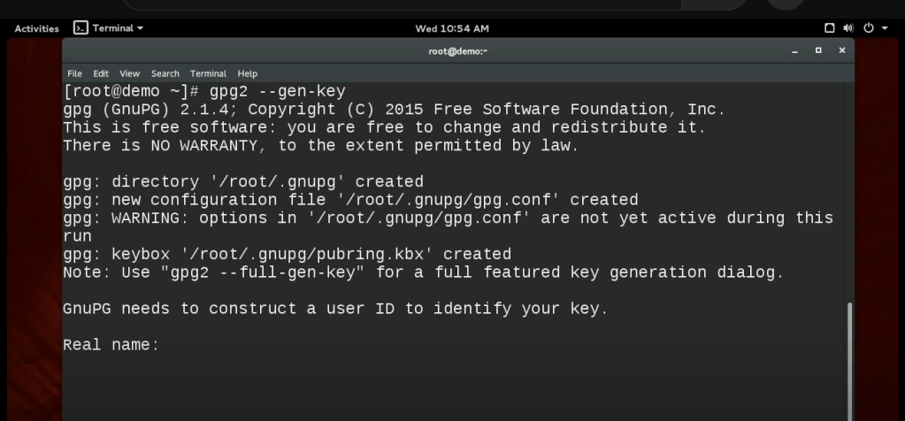
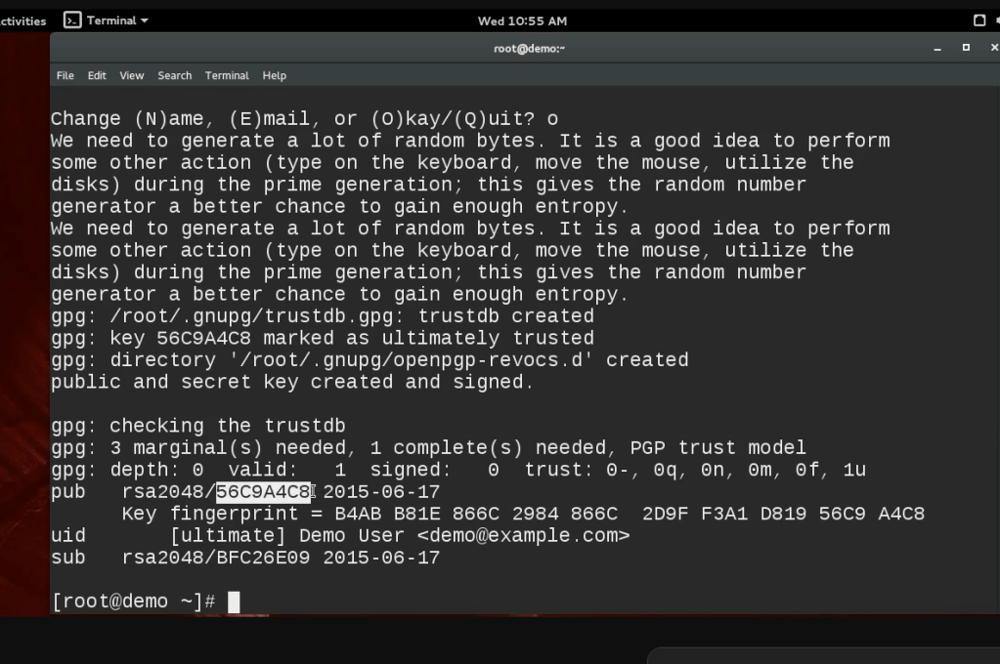
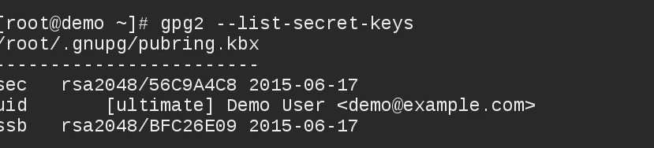

How to Create a Signature Key
Blog Post: How to Create a Signature Key
Creating a digital signature key is a crucial step in ensuring the authenticity and integrity of your digital communications and software distributions. You can use tools like GPG (GNU Privacy Guard) or Red Hat's Atomic CLI to generate a signing key. This guide will walk you through the process using GPG, a popular tool for encrypting and signing data.
Steps to Create a Signature Key with GPG
Step 1: Install GPG
If you don't have GPG installed on your system, you need to install it first. The installation process will vary depending on your operating system. Here’s a quick guide to installing GPG:
- Linux: Use your package manager. For example, on Ubuntu or Debian, run:
sudo apt-get install gnupg
- MacOS: Use Homebrew by running:
brew install gnupg
- Windows: Download and install GPG from the official GPG website.
Step 2: Generate a New GPG Key Pair
To create a new GPG key pair, open your terminal or command prompt and run the following command:
gpg --gen-key
This command will prompt you to provide some information such as your name, email address, and a passphrase. The passphrase is crucial for protecting your private key, so choose a strong one. After completing the prompts, GPG will generate a new key pair for you.

Step 3: Export the Public Key
Once your key pair is generated, you need to export the public key. The public key is what others will use to verify your signature. To export it, run the following command, replacing <your-email@example.com> with the email address associated with your GPG key:
gpg --export --armor your-email@example.com > public.key
This command exports the public key in ASCII format and saves it to a file named public.key. You can share this file with anyone who needs to verify your signatures.
Step 4: Export the Private Key (Keep This Secure!)
The private key is what you will use to sign data or software. It’s essential to keep this key secure and never share it with anyone. To export your private key, run the following command:
gpg --export-secret-key --armor your-email@example.com > private.key
This command exports the private key in ASCII format and saves it to a file named private.key. Keep this file safe and never expose it to unauthorized access. Consider storing it in a secure, encrypted storage solution or a hardware security module (HSM).
By following these steps, you’ll have successfully created a GPG signing key pair, allowing you to sign your communications or software securely. Always remember the importance of safeguarding your private key to maintain the integrity of your digital signatures.
Master and Sub Key

Key Ring

🔗 Connect with me:
-
💼 LinkedIn: https://www.linkedin.com/in/rifaterdemsahin/
-
🐦 Twitter: https://x.com/rifaterdemsahin
-
🎥 YouTube: https://www.youtube.com/@RifatErdemSahin
-
💻 GitHub: https://github.com/rifaterdemsahin
Imported from rifaterdemsahin.com · 2024